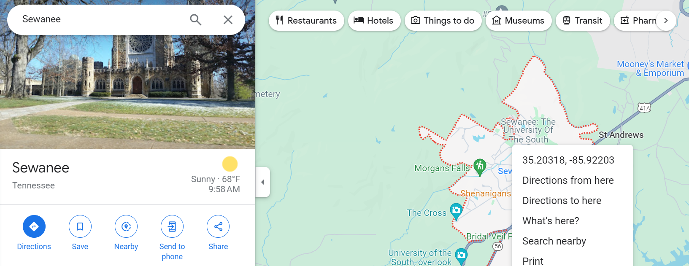

Module 15 KEMRI & DataLab Summer Workbook
Day 1: June 11th
This summer you all are going to work as a team and learn to code and also get to know one another. So what is a better way to get to know someone than by learning about their hometown? Today, in your groups you are going to put dots on a map that represent every person’s hometown from your group.
Follow this document together as a team to make this map:
Make your dataset
1. Make one Google sheet and title it: team_lat_lng with columns first_name, organization, LAT, and LNG. Note: make sure these columns are in this exact order, spelled exactly like this, with LAT and LNG in all caps!
2. Click ‘Share’ in the top right of the google sheet and in ‘General access’ click ‘Anyone with the link’. Note: this is important because in order to read data into R, it must be available to be accessed by everyone.
3. Input everyone’s name, organization (either DataLab or KEMRI), hometown latitude and longitude in the associated columns. To find your latitude and longitude, go to Google Maps, right click your hometown, then input the latitude (the first number) and longitude (the second number) from Google Maps into your Google sheet. As an example, we can tell from the following that Sewanee’s latitude is 35.20318 and Sewanee’s longitude is -85.92203 :
Watch out! Just enter numbers for latitudes and longitudes, don’t include any letters indicating north, south, east, or west. Sewanee’s longitude is negative, since Sewanee is west of the prime meridian; Sewanee’s latitude is positive, since Sewanee is north of the equator.
All done? Woohoo! You have your dataset!
Load in your data
4. For the KEMRI team, make a folder called name_datalab on your desktop (make sure to put your name where I wrote name). Everyone, in your name_datalab folder make another folder called team_map.
5. Everyone open up RStudio, make an RScript called our_map.R, and save it into your team_map folder.
6. Starting now, make sure you comment every line of your script. So make a comment that says # set working directory and set your working directory to your team_map folder.
7. Load the following libraries (if you don’t have them make sure to install them with install.packages():
8. Now, there are two ways to load in your data:
- Download the Google sheet as a csv file and and save it into your
team_mapfolder. Then in your RScript load in the data and assign it to an object:
In your environment do you have locations? If so, great!
- Another simpler way to download the data is by using the following:
# be sure to put the correct link inside the quotes below!
locations <- gsheet::gsheet2tbl('insert link')Still have locations after this? Wonderful!
Make your map
9. Now that you have your locations object, we have to tell R what to do with it. First, format things correctly:
# convert latitude and longitude into a geometry column:
locations <- st_as_sf( locations, coords = c("LNG", "LAT"), crs = "WGS84" )10. Now look at your locations object – you should see that you have POINTs in the geometry column. Since we have points instead of polygons, we need to use tmap’s tm_dots function instead of the tm_polygons function we’ve used to make our other maps. Here’s the code to make an interactive map with color-coded points:
Day 2: June 18th
The request from the client
Dear team, Today, we received some data from a PhD student from the Democratic Republic of the Congo. She has been collecting data over the past 2 years on a small subset of kids submitted to neonatology. Her supervisor has requested you to look at some of the following:
- outcome of delivery (baby is okay and if baby was admitted to nenotolagy)
- malaria during pregnancy
- weight, height and apgar
- completeness of variables
- numbers of variables
- the mean age of women
- number of kids submitted to icu/neonatology
- who went to clinic and who did not go to clinic
- how many had a single or double or triple delivery
- mean birth weight and height and range & mean apgar and range
- difference time of when delivery was made (day vs. night)
Overall, the client has requested a neonatology descriptive paper. Please send me an update once a week so that I can see how you are progressing, but I am excited to see the final product in 4 weeks time.
Many thanks,
Your super cool and suave boss
Understanding the request and the data dictionary
The first thing I do before diving into programming is look over the request and the data dictionary. Reading and understanding the request gives us an idea of what variables will be most important to us when reading the data dictionary. It is also important to define words and/or acronyms that you aren’t familiar with. It is vital to understand the data before using it, otherwise you might get unexpected results or unintentionally misuse or misrepresent the data.
The data dictionary can be found here. Unfortunately, it is in another language that I can not speak or read. Fortunately, Google Translate allows you to upload a PDF to translate in full. Here is the result of Google’s translation:
It is important to note that not all translations are accurate. If something is unclear or doesn’t make sense, investigate it. Once again, it is vital to understand the data before using it, otherwise you might get unexpected results or unintentionally misuse or misrepresent the data.
Here is a list of words/acronyms I was unfamiliar with and their definitions according to Google:
- Neonatology - “the branch of medicine concerned with the treatment and care of newborn babies”
- Eutocic - “a normal birth, which happens without complications from the beginning to the end”
- APGAR - “The Apgar score is a quick way for health professionals to evaluate the health of all newborns at 1 and 5 minutes after birth and in response to resuscitation.”
- ANC - “Antenatal care (ANC) coverage is an indicator of access and use of health care during pregnancy.”
- IPTp - “Intermittent preventive therapy or intermittent preventive treatment is a public health intervention aimed at treating and preventing malaria episodes in infants, children, schoolchildren and pregnant women.”
- Hematocrit - “the ratio of the volume of red blood cells to the total volume of blood”
- Neonate - “a newborn child”
- Neutrophils - “Neutrophils are a type of white blood cell (leukocytes) that act as your immune system’s first line of defense.”
- Leukocytes - “a type of blood cell that is made in the bone marrow and found in the blood and lymph tissue”
- Eosinophils - “Eosinophils, sometimes called eosinophiles or, less commonly, acidophils, are a variety of white blood cells and one of the immune system components responsible for combating multicellular parasites and certain infections in vertebrates.”
One important question I have is “What are the expected values of the APGAR score?”
There are 5 parts to an Apgar score. Each category is weighted evenly and assigned a 0, 1, or 2 value. The components are then added to give a score recorded 1 and 5 minutes after birth. A score of 7 to 10 is considered reassuring, a score of 4 to 6 is moderately abnormal, and a score of 0 to 3 is deemed low in full-term and late preterm infants, at 5 minutes, when an infant has a score of <7, Neonatal Resuscitation Program guidelines recommend continued recording at 5-minute intervals up to 20 minutes. Scoring during resuscitation is not equivalent to an infant not undergoing resuscitation because resuscitative efforts alter several score elements.
Given this information, we should expect the APGAR scores to fall withing 0 and 10, which matches the data dictionary. If any scores are outside of that range, it is clearly an error.
Exploring the data
Seeing what columns we have
[1] "anc_first_trimester_eco" "anc_first_trimester_eco_gestational_age"
[3] "anc_first_trimester_eco_results" "anc_first_trimester_eco_results_details"
[5] "anc_second_trimester_eco" "anc_second_trimester_eco_gestational_age"
[7] "anc_second_trimester_eco_results" "anc_second_trimester_eco_results_details"
[9] "anc_third_trimester_eco" "anc_third_trimester_eco_gestational_age"
[11] "anc_third_trimester_eco_results" "anc_third_trimester_eco_results_details"
[13] "anc_v1_crp" "anc_v1_date"
[15] "anc_v1_eo%" "anc_v1_gestational_age"
[17] "anc_v1_hb" "anc_v1_hto%"
[19] "anc_v1_l%" "anc_v1_malaria_test_a"
[21] "anc_v1_malaria_test_b" "anc_v1_malaria_test_detail_a"
[23] "anc_v1_malaria_test_detail_b" "anc_v1_malaria_test_results_a"
[25] "anc_v1_malaria_test_results_b" "anc_v1_malaria_treatment_a"
[27] "anc_v1_malaria_treatment_b" "anc_v1_malaria_treatment_c"
[29] "anc_v1_malaria_treatment_detail_a" "anc_v1_malaria_treatment_detail_b"
[31] "anc_v1_malaria_treatment_detail_c" "anc_v1_neu%"
[33] "anc_v1_plt" "anc_v1_treatment_other"
[35] "anc_v1_treatment_other_detail" "anc_v1_urine"
[37] "anc_v1_urine_detail" "anc_v1_wbc"
[39] "anc_v1_weight" "anc_v10_crp"
[41] "anc_v10_date" "anc_v10_eo%"
[43] "anc_v10_gestational_age" "anc_v10_hb"
[45] "anc_v10_hto%" "anc_v10_l%"
[47] "anc_v10_malaria_test_a" "anc_v10_malaria_test_b"
[49] "anc_v10_malaria_test_detail_a" "anc_v10_malaria_test_detail_b"
[51] "anc_v10_malaria_test_results_a" "anc_v10_malaria_test_results_b"
[53] "anc_v10_malaria_treatment_a" "anc_v10_malaria_treatment_b"
[55] "anc_v10_malaria_treatment_detail_a" "anc_v10_malaria_treatment_detail_b"
[57] "anc_v10_neu%" "anc_v10_plt"
[59] "anc_v10_treatment_other" "anc_v10_treatment_other_detail"
[61] "anc_v10_urine" "anc_v10_urine_detail"
[63] "anc_v10_wbc" "anc_v10_weight"
[65] "anc_v11_crp" "anc_v11_date"
[67] "anc_v11_eo%" "anc_v11_gestational_age"
[69] "anc_v11_hb" "anc_v11_hto%"
[71] "anc_v11_l%" "anc_v11_malaria_test_a"
[73] "anc_v11_malaria_test_b" "anc_v11_malaria_test_detail_a"
[75] "anc_v11_malaria_test_detail_b" "anc_v11_malaria_test_results_a"
[77] "anc_v11_malaria_test_results_b" "anc_v11_malaria_treatment_a"
[79] "anc_v11_malaria_treatment_b" "anc_v11_malaria_treatment_detail_a"
[81] "anc_v11_malaria_treatment_detail_b" "anc_v11_neu%"
[83] "anc_v11_plt" "anc_v11_treatment_other"
[85] "anc_v11_treatment_other_detail" "anc_v11_urine"
[87] "anc_v11_urine_detail" "anc_v11_wbc"
[89] "anc_v11_weight" "anc_v2_crp"
[91] "anc_v2_date" "anc_v2_eo%"
[93] "anc_v2_gestational_age" "anc_v2_hb"
[95] "anc_v2_hto%" "anc_v2_l%"
[97] "anc_v2_malaria_test_a" "anc_v2_malaria_test_b"
[99] "anc_v2_malaria_test_detail_a" "anc_v2_malaria_test_detail_b"
[101] "anc_v2_malaria_test_results_a" "anc_v2_malaria_test_results_b"
[103] "anc_v2_malaria_treatment_a" "anc_v2_malaria_treatment_b"
[105] "anc_v2_malaria_treatment_detail_a" "anc_v2_malaria_treatment_detail_b"
[107] "anc_v2_neu%" "anc_v2_plt"
[109] "anc_v2_treatment_other" "anc_v2_treatment_other_detail"
[111] "anc_v2_urine" "anc_v2_urine_detail"
[113] "anc_v2_wbc" "anc_v2_weight"
[115] "anc_v3_crp" "anc_v3_date"
[117] "anc_v3_eo%" "anc_v3_gestational_age"
[119] "anc_v3_hb" "anc_v3_hto%"
[121] "anc_v3_l%" "anc_v3_malaria_test_a"
[123] "anc_v3_malaria_test_b" "anc_v3_malaria_test_detail_a"
[125] "anc_v3_malaria_test_detail_b" "anc_v3_malaria_test_results_a"
[127] "anc_v3_malaria_test_results_b" "anc_v3_malaria_treatment_a"
[129] "anc_v3_malaria_treatment_b" "anc_v3_malaria_treatment_c"
[131] "anc_v3_malaria_treatment_detail_a" "anc_v3_malaria_treatment_detail_b"
[133] "anc_v3_malaria_treatment_detail_c" "anc_v3_neu%"
[135] "anc_v3_plt" "anc_v3_treatment_other"
[137] "anc_v3_treatment_other_detail" "anc_v3_urine"
[139] "anc_v3_urine_detail" "anc_v3_wbc"
[141] "anc_v3_weight" "anc_v4_crp"
[143] "anc_v4_date" "anc_v4_eo%"
[145] "anc_v4_gestational_age" "anc_v4_hb"
[147] "anc_v4_hto%" "anc_v4_l%"
[149] "anc_v4_malaria_test_a" "anc_v4_malaria_test_b"
[151] "anc_v4_malaria_test_detail_a" "anc_v4_malaria_test_detail_b"
[153] "anc_v4_malaria_test_results_a" "anc_v4_malaria_test_results_b"
[155] "anc_v4_malaria_treatment_a" "anc_v4_malaria_treatment_b"
[157] "anc_v4_malaria_treatment_detail_a" "anc_v4_malaria_treatment_detail_b"
[159] "anc_v4_neu%" "anc_v4_plt"
[161] "anc_v4_treatment_other" "anc_v4_treatment_other_detail"
[163] "anc_v4_urine" "anc_v4_urine_detail"
[165] "anc_v4_wbc" "anc_v4_weight"
[167] "anc_v5_crp" "anc_v5_date"
[169] "anc_v5_eo%" "anc_v5_gestational_age"
[171] "anc_v5_hb" "anc_v5_hto%"
[173] "anc_v5_l%" "anc_v5_malaria_test_a"
[175] "anc_v5_malaria_test_b" "anc_v5_malaria_test_detail_a"
[177] "anc_v5_malaria_test_detail_b" "anc_v5_malaria_test_results_a"
[179] "anc_v5_malaria_test_results_b" "anc_v5_malaria_treatment_a"
[181] "anc_v5_malaria_treatment_b" "anc_v5_malaria_treatment_detail_a"
[183] "anc_v5_malaria_treatment_detail_b" "anc_v5_neu%"
[185] "anc_v5_plt" "anc_v5_treatment_other"
[187] "anc_v5_treatment_other_detail" "anc_v5_urine"
[189] "anc_v5_urine_detail" "anc_v5_wbc"
[191] "anc_v5_weight" "anc_v6_crp"
[193] "anc_v6_date" "anc_v6_eo%"
[195] "anc_v6_gestational_age" "anc_v6_hb"
[197] "anc_v6_hto%" "anc_v6_l%"
[199] "anc_v6_malaria_test_a" "anc_v6_malaria_test_b"
[201] "anc_v6_malaria_test_detail_a" "anc_v6_malaria_test_detail_b"
[203] "anc_v6_malaria_test_results_a" "anc_v6_malaria_test_results_b"
[205] "anc_v6_malaria_treatment_a" "anc_v6_malaria_treatment_b"
[207] "anc_v6_malaria_treatment_detail_a" "anc_v6_malaria_treatment_detail_b"
[209] "anc_v6_neu%" "anc_v6_plt"
[211] "anc_v6_treatment_other" "anc_v6_treatment_other_detail"
[213] "anc_v6_urine" "anc_v6_urine_detail"
[215] "anc_v6_wbc" "anc_v6_weight"
[217] "anc_v7_crp" "anc_v7_date"
[219] "anc_v7_eo%" "anc_v7_gestational_age"
[221] "anc_v7_hb" "anc_v7_hto%"
[223] "anc_v7_l%" "anc_v7_malaria_test_a"
[225] "anc_v7_malaria_test_b" "anc_v7_malaria_test_detail_a"
[227] "anc_v7_malaria_test_detail_b" "anc_v7_malaria_test_results_a"
[229] "anc_v7_malaria_test_results_b" "anc_v7_malaria_treatment_a"
[231] "anc_v7_malaria_treatment_b" "anc_v7_malaria_treatment_detail_a"
[233] "anc_v7_malaria_treatment_detail_b" "anc_v7_neu%"
[235] "anc_v7_plt" "anc_v7_treatment_other"
[237] "anc_v7_treatment_other_detail" "anc_v7_urine"
[239] "anc_v7_urine_detail" "anc_v7_wbc"
[241] "anc_v7_weight" "anc_v8_crp"
[243] "anc_v8_date" "anc_v8_eo%"
[245] "anc_v8_gestational_age" "anc_v8_hb"
[247] "anc_v8_hto%" "anc_v8_l%"
[249] "anc_v8_malaria_test_a" "anc_v8_malaria_test_b"
[251] "anc_v8_malaria_test_detail_a" "anc_v8_malaria_test_detail_b"
[253] "anc_v8_malaria_test_results_a" "anc_v8_malaria_test_results_b"
[255] "anc_v8_malaria_treatment_a" "anc_v8_malaria_treatment_b"
[257] "anc_v8_malaria_treatment_c" "anc_v8_malaria_treatment_detail_a"
[259] "anc_v8_malaria_treatment_detail_b" "anc_v8_malaria_treatment_detail_c"
[261] "anc_v8_neu%" "anc_v8_plt"
[263] "anc_v8_treatment_other" "anc_v8_treatment_other_detail"
[265] "anc_v8_urine" "anc_v8_urine_detail"
[267] "anc_v8_wbc" "anc_v8_weight"
[269] "anc_v9_crp" "anc_v9_date"
[271] "anc_v9_eo%" "anc_v9_gestational_age"
[273] "anc_v9_hb" "anc_v9_hto%"
[275] "anc_v9_l%" "anc_v9_malaria_test_a"
[277] "anc_v9_malaria_test_b" "anc_v9_malaria_test_detail_a"
[279] "anc_v9_malaria_test_detail_b" "anc_v9_malaria_test_results_a"
[281] "anc_v9_malaria_test_results_b" "anc_v9_malaria_treatment_a"
[283] "anc_v9_malaria_treatment_b" "anc_v9_malaria_treatment_detail_a"
[285] "anc_v9_malaria_treatment_detail_b" "anc_v9_neu%"
[287] "anc_v9_plt" "anc_v9_treatment_other"
[289] "anc_v9_treatment_other_detail" "anc_v9_urine"
[291] "anc_v9_urine_detail" "anc_v9_wbc"
[293] "anc_v9_weight" "antène_cpn"
[295] "apgar_1_baby_1" "apgar_1_baby_2"
[297] "apgar_10_baby_1" "apgar_10_baby_2"
[299] "apgar_5_baby_1" "apgar_5_baby_2"
[301] "attending_baby_1" "attending_baby_2"
[303] "baby_1_chart_number_(if_different_from_mother)" "baby_1_crp_at_admission"
[305] "baby_1_eo%_at_admission" "baby_1_hb_at_admission"
[307] "baby_1_hto%_at_admission" "baby_1_l%_at_admission"
[309] "baby_1_malaria_test" "baby_1_malaria_test_detail_a"
[311] "baby_1_malaria_test_detail_b" "baby_1_malaria_test_results_a"
[313] "baby_1_malaria_test_results_b" "baby_1_neu%_at_admission"
[315] "baby_1_outcome" "baby_1_plt_at_admission"
[317] "baby_1_sex" "baby_1_wbc_at_admission"
[319] "baby_2_chart_number_(if_different_from_mother)" "baby_2_crp_at_admission"
[321] "baby_2_eo%_at_admission" "baby_2_hb_at_admission"
[323] "baby_2_hto%_at_admission" "baby_2_l%_at_admission"
[325] "baby_2_malaria_test" "baby_2_malaria_test_detail_a"
[327] "baby_2_malaria_test_detail_b" "baby_2_malaria_test_results_a"
[329] "baby_2_malaria_test_results_b" "baby_2_neu%_at_admission"
[331] "baby_2_outcome" "baby_2_plt_at_admission"
[333] "baby_2_sex" "baby_2_wbc_at_admission"
[335] "cpn" "date_of_admission_baby_1"
[337] "date_of_admission_baby_2" "date_of_release_baby_1"
[339] "date_of_release_baby_2" "delivery_complications"
[341] "delivery_date" "delivery_details_baby_1"
[343] "delivery_details_baby_2" "diagnosis_at_admission_baby_1"
[345] "diagnosis_at_admission_baby_2" "gestacional_age"
[347] "head_circumference_baby_1" "head_circumference_baby_2"
[349] "iptp_how_many" "lenght_at_birth_baby_1"
[351] "lenght_at_birth_baby_2" "lst_menstrual_period"
[353] "malaria_diagnosis" "marital_status"
[355] "médicament_iptp" "mother_chart_number"
[357] "mother_commune" "mother_dob"
[359] "mother_nationality" "mother_study_level"
[361] "neonatology_admission_baby_1" "neonatology_admission_baby_2"
[363] "nº_cpn" "number_malaria_diagnosis"
[365] "other_diagnosis" "previous_abortions"
[367] "previous_deliveries" "previous_other"
[369] "previous_pregnancies" "previous_still_births"
[371] "received_iptp" "time_of_delivery_baby_1"
[373] "time_of_delivery_baby_2" "type_malaria_diagnosis"
[375] "weight_at_admission_baby_1" "weight_at_admission_baby_2"
[377] "weight_at_birth_baby_1" "weight_at_birth_baby_2"
[379] "weight_at_release_baby_1" "weight_at_release_baby_2" Wow, that’s a lot of columns!
Do note that a lot, if not all, of the ‘anc_vx_…’ columns, where x is a number, are detailed in the data dictionary in the variables that have ‘V1’ in the name. The highest value of x that I’ve seen is 11, meaning that for each of those variables, there may be up to 11 columns representing different visits. Let’s check to make sure.
We should expect 11 instances of these 27 columns corresponding to each potential visit, which is a total of 297 columns. The code below checks if the expected ‘anc_v1_…’ through ‘anc_v11_…’ columns are in the data frame and prints out the ones that are missing.
[1] "anc_v10_malaria_treatment_c" "anc_v10_malaria_treatment_detail_c"
[3] "anc_v11_malaria_treatment_c" "anc_v11_malaria_treatment_detail_c"
[5] "anc_v2_malaria_treatment_c" "anc_v2_malaria_treatment_detail_c"
[7] "anc_v4_malaria_treatment_c" "anc_v4_malaria_treatment_detail_c"
[9] "anc_v5_malaria_treatment_c" "anc_v5_malaria_treatment_detail_c"
[11] "anc_v6_malaria_treatment_c" "anc_v6_malaria_treatment_detail_c"
[13] "anc_v7_malaria_treatment_c" "anc_v7_malaria_treatment_detail_c"
[15] "anc_v9_malaria_treatment_c" "anc_v9_malaria_treatment_detail_c" It appears that we are missing the above 16 “anc_vx” columns.
Let’s continue to look through the remaining columns to make sure that they are in the data dictionary and make sense.
[1] "anc_first_trimester_eco" "anc_first_trimester_eco_gestational_age"
[3] "anc_first_trimester_eco_results" "anc_first_trimester_eco_results_details"
[5] "anc_second_trimester_eco" "anc_second_trimester_eco_gestational_age"
[7] "anc_second_trimester_eco_results" "anc_second_trimester_eco_results_details"
[9] "anc_third_trimester_eco" "anc_third_trimester_eco_gestational_age"
[11] "anc_third_trimester_eco_results" "anc_third_trimester_eco_results_details"
[13] "antène_cpn" "apgar_1_baby_1"
[15] "apgar_1_baby_2" "apgar_10_baby_1"
[17] "apgar_10_baby_2" "apgar_5_baby_1"
[19] "apgar_5_baby_2" "attending_baby_1"
[21] "attending_baby_2" "baby_1_chart_number_(if_different_from_mother)"
[23] "baby_1_crp_at_admission" "baby_1_eo%_at_admission"
[25] "baby_1_hb_at_admission" "baby_1_hto%_at_admission"
[27] "baby_1_l%_at_admission" "baby_1_malaria_test"
[29] "baby_1_malaria_test_detail_a" "baby_1_malaria_test_detail_b"
[31] "baby_1_malaria_test_results_a" "baby_1_malaria_test_results_b"
[33] "baby_1_neu%_at_admission" "baby_1_outcome"
[35] "baby_1_plt_at_admission" "baby_1_sex"
[37] "baby_1_wbc_at_admission" "baby_2_chart_number_(if_different_from_mother)"
[39] "baby_2_crp_at_admission" "baby_2_eo%_at_admission"
[41] "baby_2_hb_at_admission" "baby_2_hto%_at_admission"
[43] "baby_2_l%_at_admission" "baby_2_malaria_test"
[45] "baby_2_malaria_test_detail_a" "baby_2_malaria_test_detail_b"
[47] "baby_2_malaria_test_results_a" "baby_2_malaria_test_results_b"
[49] "baby_2_neu%_at_admission" "baby_2_outcome"
[51] "baby_2_plt_at_admission" "baby_2_sex"
[53] "baby_2_wbc_at_admission" "cpn"
[55] "date_of_admission_baby_1" "date_of_admission_baby_2"
[57] "date_of_release_baby_1" "date_of_release_baby_2"
[59] "delivery_complications" "delivery_date"
[61] "delivery_details_baby_1" "delivery_details_baby_2"
[63] "diagnosis_at_admission_baby_1" "diagnosis_at_admission_baby_2"
[65] "gestacional_age" "head_circumference_baby_1"
[67] "head_circumference_baby_2" "iptp_how_many"
[69] "lenght_at_birth_baby_1" "lenght_at_birth_baby_2"
[71] "lst_menstrual_period" "malaria_diagnosis"
[73] "marital_status" "médicament_iptp"
[75] "mother_chart_number" "mother_commune"
[77] "mother_dob" "mother_nationality"
[79] "mother_study_level" "neonatology_admission_baby_1"
[81] "neonatology_admission_baby_2" "nº_cpn"
[83] "number_malaria_diagnosis" "other_diagnosis"
[85] "previous_abortions" "previous_deliveries"
[87] "previous_other" "previous_pregnancies"
[89] "previous_still_births" "received_iptp"
[91] "time_of_delivery_baby_1" "time_of_delivery_baby_2"
[93] "type_malaria_diagnosis" "weight_at_admission_baby_1"
[95] "weight_at_admission_baby_2" "weight_at_birth_baby_1"
[97] "weight_at_birth_baby_2" "weight_at_release_baby_1"
[99] "weight_at_release_baby_2" These all look good to me! As far as I can tell, the only columns missing that are in the data dictionary are mother’s first name, mother’s last name, mother’s phone number 1, mother’s phone number 2, baby 1’s first name, baby 1’s last name, baby 2’s first name, and baby 2’s last name. These columns have been intentionally removed from the data beforehand to keep the data as anonymous as possible while still being useful.
Removing an obvious error
Notice that I’ve made a separate data frame for cleaning. This makes it easier to rerun code without having to completely reload the data from the source. It also makes it easy to compare the original data with the modified data.
NOTE: Never remove or modify the original data from the source, even if it is obviously incorrect! Always work on a copy of the data! If you modify the original data and your changes end up being incorrect, then you’ve tampered with the data and potentially ruined the entire data set. Another advantage of working on a copy of the data and cleaning it with code is that it documents everything we do, making what we’ve done clear and reproducible. Fortunately in this case, our source data isn’t something we can modify directly; however, there are cases in which you might be given the source data in an unprotected way that would allow you to overwrite it. An example of this would be using the googlesheets4 library, which allows you to read and write directly to a Google sheet. This can dangerous if you aren’t careful!
Checking that the marital statuses are valid
According to the data dictionary, acceptable values are ‘M’ for married, ‘C’ for single, and ‘non reporté’ for not reported. I’ll also treat NA values as if they were ‘non reporté’ since both mean that the value is missing for that row.
There are values of ‘D’ for marital_status, which is not in the data dictionary. It might mean divorced; however, it’s best to talk to the client before assuming anything. It could also be an error inputting the value ‘C’, since the two letters look similar. For now, I’ll keep those values in the data. To remove them though, I’d use the code below. Once again, I’ve set the chunk’s eval flag to FALSE to prevent it from running. To run it, change the flag back to eval = TRUE.
Also, notice that I’ve used the tolower() function. The values in the column may be capitalized in inconsistent ways. Forcing them all to be lowercase in the filter function allows us to ignore the inconsistent capitalization without changing the actual data to all lowercase. You can permanently change the data to lowercase using the mutate() function; however, in some scenarios, the capitalization might be important, especially when it comes to acronyms and abbreviations.
Checking that the malaria diagnosis during pregnancy values are valid
The data dictionary defines this variable as having a value of ‘non’ for no, ‘oui’ for yes, and ‘non reporté’ for not reported. Once again, I’ll treat NA values as if they were ‘non reporté’ and ignore them.
To remove these erroneous values, I’d use the code below. Once again, I’ve set the chunk’s eval flag to FALSE to prevent it from running. To run it, change the flag back to eval = TRUE.
Checking the delivery complication values
The data dictionary doesn’t define all of the possible values for this column, so I’ve decided to explore all of the unique values in our data. It would be a great idea to look at these closer on an individual level to understand what each value means and whether or not it is appropriate for this column.
We can also see that some of the values appear to be the same but are written in different ways.
Checking the time of delivery values
The time of delivery values vary in format. It may be best to remove delivery times not in the format of ‘HH:MM’, ‘H:MM’, NA, or ‘non reporté’. The following code does so, but I’ve set the eval flag to FALSE to prevent it from running.
Checking the weight at birth values
The data dictionary defines these columns as the baby’s weight in grams at birth, so let’s check for values that aren’t numeric, NA, or ‘non reporté’.
There are two instances of the second baby’s weight being ‘M’. That doesn’t make sense!
Here’s how to keep only the numeric, NA, or ‘non reporté’ values and filter out the rest. Once again, I’ve set the chunk’s eval flag to FALSE to prevent it from running. To run it, change the flag back to eval = TRUE.
Another thing to ask is, “Do the reported weights actually make sense?” Remember, the units should be in grams!
[1] 9 41000Some of these baby weights make no sense! The maximum baby weight in the data is 41,000 grams, which is a whopping 90.389527 pounds! The minimum baby weight in the data is 9 grams, which is only 0.0198416 pounds! This is definitely something to discuss with the client.
Checking the neonatology admittance variable
The expected values of the neonatology admittance columns are ‘Oui’ and ‘Non’. Let’s find all of the unique values of these columns to check if they match our expectations.
Once again, capitalization matters! It also appears that there are some typos and unexpected values!
Summary
This is NOT a comprehensive cleaning script for this data. There is a lot more work to be done; however, this is a good starting point.
The purpose of this document is to show you my thought process and the techniques I use to clean data. As you use the data, you will inevitably find more issues and realize that there’s more cleaning to be done. Sometimes it isn’t obvious that there is a mistake in the data even after you’ve generated visualizations and run tests on it, so it is vital to do your due diligence and get to know your data BEFORE using it.
This process can be disheartening, but remember, the work we are doing matters and it is worth every second to go back and add to or modify our cleaning scripts. Not only is it the responsible and moral thing to do, it’s also what we are paid to do!
I cannot stress enough the importance of looking deeper into the data to find out what we are working with and why we get the results that we get. The accuracy and reliability of our findings, as well as the reputation of ourselves, our organization, and any other affiliations are on the line!
Day 3: June 25th
As a team work together to answer the following questions to make a mini-report on the DRC dataset:
1. Open up an RMarkdown file and save it in your name_datalab folder and call it descriptive_DRC_analysis.Rmd and title the document Neonatal mortality in DRC Congo.
2. Click knit. What do you see? As a team discuss what you want to delete and keep and make sure everyone knows what an RMarkdown file is before moving forward.
3. Make sure when you knit your document you have a title that says Neonatal mortality in DRC Congo (hint: use one hashtag to make a title).
4. Make another section called Introduction. In the introduction include the following information and replace the _ with information you find in the appropriate links:
Globally _ million children died in the first 20 days of life in 2022. There are approximately _ newborn deaths every day, amounting to _% of all child deaths under the age of 5 years (WHO, 2024)[https://www.who.int/news-room/fact-sheets/detail/newborn-mortality].
Up to _ of newborn deaths can be prevented if known and if effective health measures are provided at birth and during the first week of life. The vast majority of newborn deaths take place in developing countries where access to health care is low. Most of these newborns die at home, without skilled care that could greatly increase their chances for survival (WHO)[https://www.afro.who.int/health-topics/newborn].
Malaria is common during pregnancy and can have serious consequences for neonatal health. Neonatal morbidity and mortality can be significantly reduced by proper implementation of insecticide-treated nets and intermittent preventive treatment (source)[https://pubmed.ncbi.nlm.nih.gov/21118620/].
The WHO African Region carries a disproportionately high share of the global malaria burden. In 2022, the Region was home to 94% of malaria cases (233 million) and 95% (580,000) of malaria deaths. DRC Congo accounted for 12% of all malaria in the world in 2022.
DRC is one of the poorest countries in the world (source)[https://www.cia.gov/the-world-factbook/countries/congo-democratic-republic-of-the/]. The health care system in DRC is highly dependent of private actors. Care-seeking and treatment for malaria in the private sector (including non-profit and faith-based facilities, for-profit clinics, pharmacies, and drug shops) is widespread. According to the 2013-2014 Demographic and Health Survey (DHS), among children with fever, _ percent report seeking care in the public sector and _ percent in the private sector (source)[https://www.severemalaria.org/countries/democratic-republic-of-congo/drc-health-system].
5. Make another section called Aims/Objective and insert the following:
We will work together to generate hypothesis around delivery outcomes and interrogate this dataset in search for answers.
6. Make a section called Preliminary Research and under this section title create a code chunk.
7. Paste the following inside your code chunk to load your libraries and load your data:
# load libraries
library(readr)
library(lubridate)
library(dplyr)
# download data
df <- read_csv('https://mbrudd.com/drc_data/DRC_data_clean_v1.csv')8. How many columns are in this dataset? (Hint: ncol())
9 Create an object that contains the number of columns in the dataset. See below for a hint:
10. Now the first sentence in your Preliminary Research should be: This dataset contains 380 columns. You know how to write words on your RMarkdown, but to insert a number that is stored as an object in your environment try the following:
11. Now add and 2072 variables. but use code to write the number…
12. What is the unit of observation for this dataset? Does each row have a mom and her kids in it? I don’t know you tell me. Write a sentence about the unit of observation after the sentence you wrote above.
13. Find the mean age of women submitted to the unit. To do this convert mother_dob and your reference date (delivery_date) to a date. Create a column called mother_age. Then find the mean age of women submitted to the unit.
# convert mother_dob and delivery_date to a date
df_research <- df %>%
mutate(mother_dob = as.Date(mother_dob, format = "%m/%d/%y"),
delivery_date = as.Date(delivery_date, format = "%m/%d/%y"))
# create a column called mother_age
df_research <- df_research %>%
mutate(mother_age = as.numeric(difftime(delivery_date, mother_dob, units = "weeks")) / 52.25)
# create an object called mean_mother_age
mean_mother_age <- mean(df_research$mother_age, na.rm = TRUE)14. Add a sentence to your Preliminary Research that says what the mean age of women is.
15. How many kids were submitted to neonatology? This information is in 2 columns: neonatology_admission_baby_1 and neonatology_admission_baby_2. A. lower all the words in the column (hint: tolower()). B. run table(df_research$neonatology_admission_baby_1), if there are values that you think are errors remove them using filter() OR if there are values that you think you can edit use mutate() and ifelse / case_when to fix these instances. C. count how many kids were and were not submitted to neonatology in each column. D. Add these values to your paragraph. Use the following code to answer this question:
# calculate how many kids were submitted to neonatology
df_research <- df_research %>%
# lower all the words in the column
mutate(neonatology_admission_baby_1 = tolower(neonatology_admission_baby_1)) %>%
# filter out entries that are wrong
filter(neonatology_admission_baby_1 != 'bb lusamba mukeba') %>%
# edit the cases that seem fixable
mutate(neonatology_admission_baby_1 = case_when(
neonatology_admission_baby_1 == 'oiui' ~ 'oui',
TRUE ~ neonatology_admission_baby_1
))
# calculate who was and was not submitted to neonatology (this table should only have oui and non)
df_research %>%
group_by(neonatology_admission_baby_1) %>%
tally()
# once you get here you can do this again for neonatology_admission_baby_2 and then calculate how many children in total were and were not submitted to neonatologyGood work! You made a lot of progress today. We will pick up next week to keep working on your report.